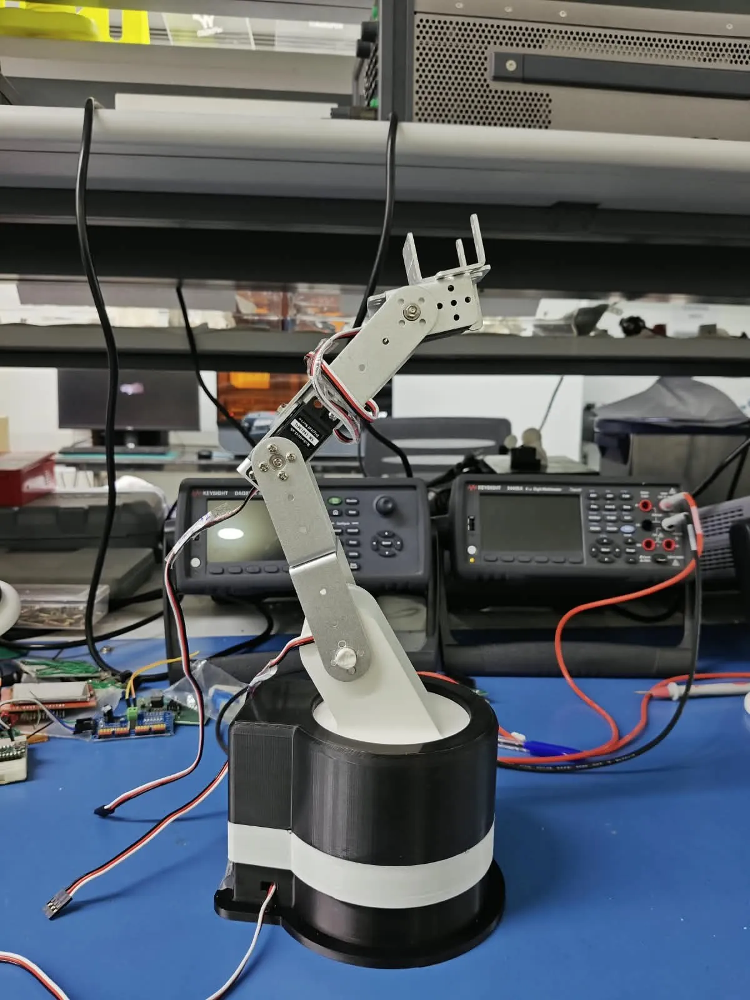
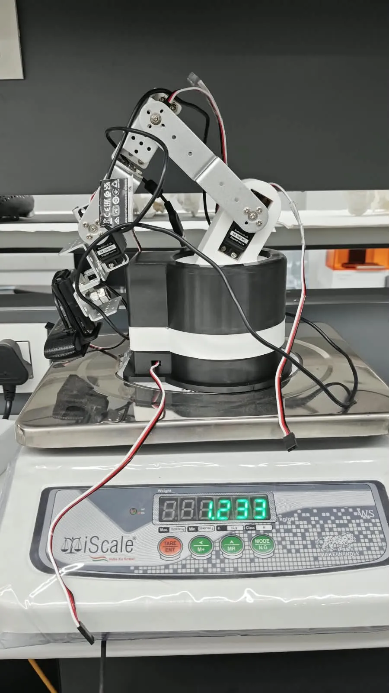
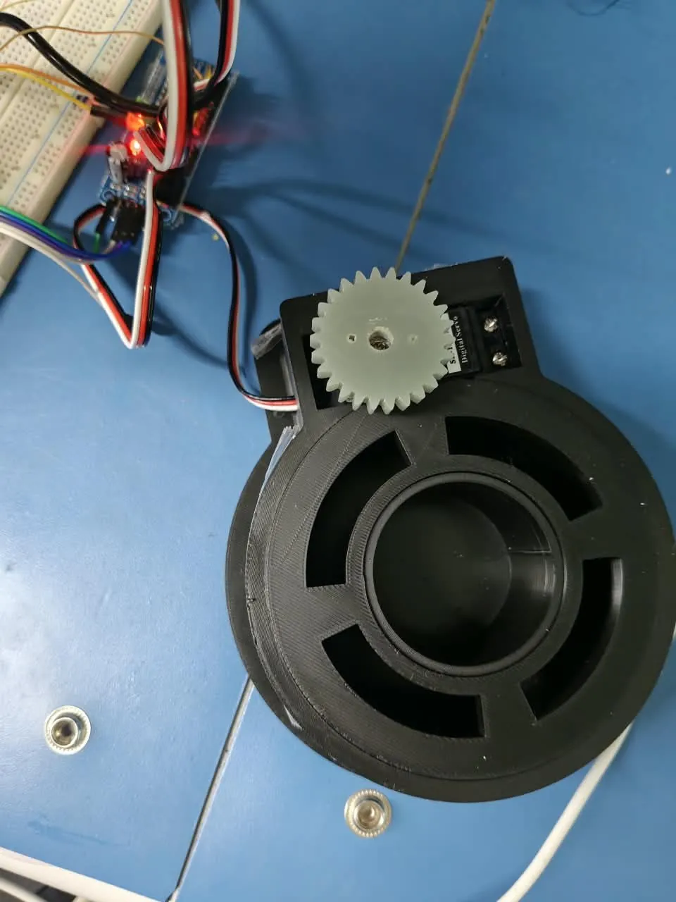
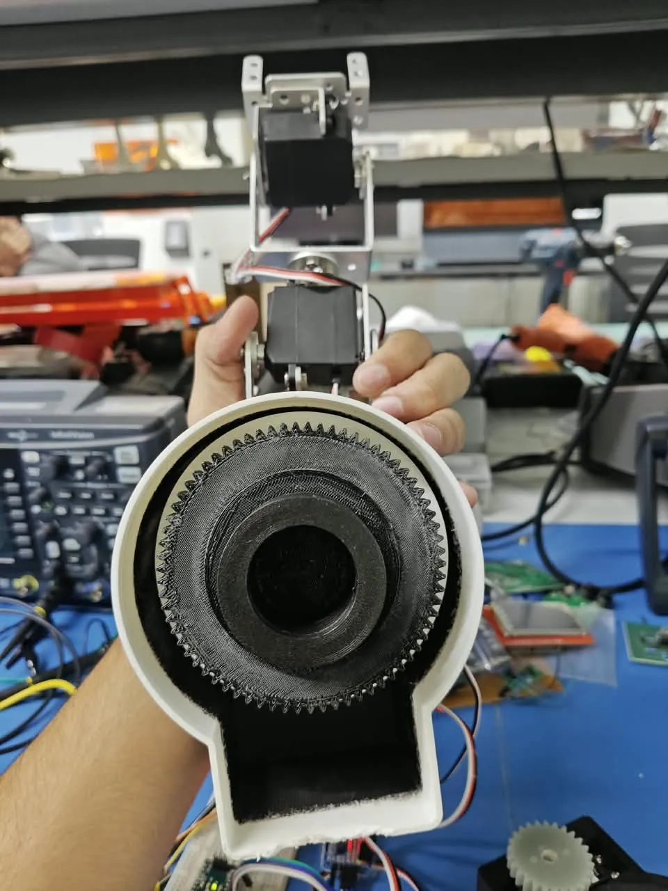
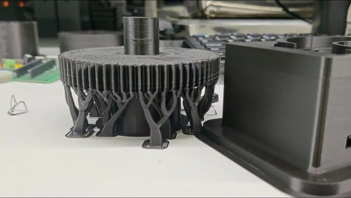

A surgical arm that finds its own joints with cameras
An arm to hold an endoscope steady and follow the surgeon’s instrument, built on hobby servos that never report where they are.
- With
- Dr. Dinesh Kalyanasundaram (supervisor); Bavath D. and Yogesh Sahu (mentors)
- My part
- The mechanical prototype, both vision loops, the simulation
- Tools
- ROS 2, MuJoCo, Python, OpenCV, MATLAB; FDM printing, aluminium brackets
- In numbers
- 6 degrees of freedom · 1.233 kg with servos and wiring · 2 camera feedback loops
- Status
- Tracking works on the bench; stereo depth is next
This page is a piano roll. Its keys run down the left edge: click one, or click the paper to punch a note. Scrolling plays it.

The problem
The prototype runs on digital hobby servos. They’re cheap and easy to replace, but they’re open-loop: you command an angle and get no confirmation back. Under load, or with backlash in the gears, the arm drifts, and nothing in the hardware notices.
For anything that will sit near a patient, that isn’t acceptable.
The hardware
Six servo-driven joints on aluminium brackets, standing on a 3D-printed base. A servo drives a small pinion that meshes with a ring gear printed inside the housing, so the whole arm turns on it. With its servos and wiring, the arm weighs 1.233 kg.





Closing the loop with cameras
Two camera loops stand in for the feedback the servos don’t give.
- A second camera watches the arm and runs the pose-estimation pipeline I adapted from my work at QuEST Lab, to estimate where each joint actually is.
- The camera on the arm tracks the instrument tip. The pixel error between the tip and the centre of the frame feeds a PID controller, which turns the joints to bring it back to the centre.
Simulation first
The arm is modelled in ROS 2 and MuJoCo, so a motion is tried, and broken, in simulation before it runs on the hardware. The test is simple: command a position, measure with the camera where the tool actually went, and close the gap.
What’s next
- Stereo depth, so the tracking works in three dimensions instead of in the image plane.
- A mathematical model of the arm, then policy training in MATLAB.